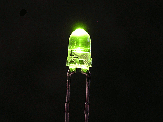

प्रकाश उत्सर्जक
डायोड
जब कोई उत्तेजित इलेक्ट्रॉन चालन बैण्ड से संयोजी बैण्ड के होल में जाता है , तो वे युग्मित होकर विद्युत चुम्बकीय तरंग के रुप में उर्जा मुक्त करता है । यदि इसका तंरणधैर्य दृश्य क्षेत्र में होता है तो हमलोग देख सकते हैं कि इस दौरान डायोड से प्रकाश उत्सर्जित हो रहा है। इलेक्ट्रॉन व होल के संयोजन की प्रक्रिया बढ़ाया जा सकता है जब डायोड अग्र बायसित रहता है तथा डायोड में से उच्च धारा प्रवाहित होती है।


अतः LED एक अत्यधिक डोपित (heavily doped) p-n सन्धि डायोड होता है।जिसपर पारदर्शी आवरण (कवर) होता है तथा यह अग्र बायसित स्थिति में संचालित होता है I